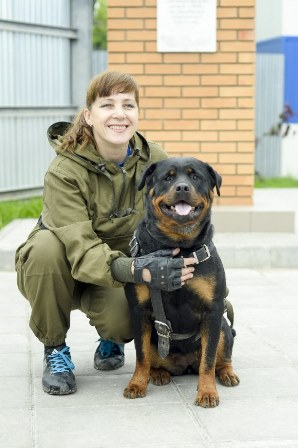

Я решала выбрать профессию кинолога, потому что очень люблю собак, так же, я хотела помогать людям, поэтому эта профессия мне больше всего подходит. С детства меня очень тянуло к животным. Я легко находила с ними общий язык. Однажды, я посмотрела фильм Меган Ливи и очень вдохновилась им. После просмотра этого фильма и началась моя дорога в кинологию.
Образование
2025 г - ГБПОУ ОКГ "Столица" Специальность: 35.02.15 Кинология
Достижения
Я со своей собакой занимала призовые места в соревнованиях по ЗКС, IGP и Аджилити.
Я являюсь заводчиком крупного питомника Ротвейлеров и Английских Спрингер Спаниелей под названием "Чудо Пес" в московской области.